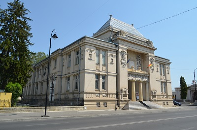

Obiective Culturale Dâmbovița
Muzeul de istorie din Târgoviște
Muzeul de Istorie din Târgoviște este un muzeu județean din Târgoviște, amplasat în Calea Domnească nr. 181. Înscrisă într-un efort edilitar mai amplu, în care și-au unit forțele autoritățile locale și cetățenii, construcția unui Palat de Justiție între 1901 - 1902, în imediata apropiere a sediului Prefecturii (1895), nu a fost deloc surprinzătoare. În 1918, clădirii construite în stil neoclasic și caracterizate prin sobrietatea volumelor și echilibru i se va adăuga etajul. În septembrie 1986, edificiul se va prezenta publicului sub o nouă imagine odată cu inaugurarea noului Muzeu de Istorie. Parterul este destinat în special expozițiilor temporare; o sală modernă, dar și holul, generos ca spațiu, permit atât astfel de evenimente, cât și alte genuri: prezentări, conferințe, seminare. Etajul găzduiește expoziția permanentă a Muzeului de Istorie, ce se dorește un periplu prin istoria acestor meleaguri, din cele mai vechi timpuri ale existenței umane până la finele Primului Război Mondial. Călătoria începe, în prima sală, dedicată preistoriei, de la Paleolitic la prima epocă a fierului, cu exponate de la unelte simple din piatră asociate cu resturi de faună, la ceramică neolitică aparținând culturii Gumelnița. Din obiectele aparținând epocii bronzului reținem colierul din cuarț aventurin de la Gorgota. O sabie și câteva topoare celtice descoperite la Brătești și Ocnița ilustrează prima epocă a fierului, Hallstatt. Două săli sunt dedicate celei de-a doua epoci a fierului, La Tene, și perioadei clasice a istoriei care se confundă cu existența civilizației geto-dace. Tezaurele monetare geto-dace, macedonene și romane atestă mai mult decât schimburi comerciale. Războaiele daco-romane, dar mai ales viața de după cucerire, secolele II - IV, sunt ilustrate prin diverse obiecte descoperite la Cătunu, Mătăsaru și Mogoșani, iar secolele V - VII, prin descoperiri de la Băleni. Un obiect de o valoare deosebită este cazanul hunic (secolul V) descoperit în 1983 la Ionești, comuna Petrești. Urcăm câteva trepte și simbolic facem un salt în timp, sala următoare dorind să ilustreze alte realități: constituirea statului medieval Țara Românească și rolul pe care Târgoviște l-a avut în istorie în secolul al XV-lea. Mai departe, printr-o zonă intermediară străjuită de armurile a doi cavaleri din secolele XV-XVI, ajungem în secolele XVI - XVIII, cărora le sunt rezervate două săli, secole în care Târgoviște a cunoscut o înflorire deosebită, marcată însă și de perioade mai întunecate. Domnitorii Radu cel Mare, Neagoe Bararab, Petru Cercel, Mihai Viteazul, Matei Basarab și Constantin Brâncoveanu, prin activitatea lor, constructivă, culturală, politică și militară, și-au legat pentru totdeauna numele de această urbe. După secolul fanariot, Târgoviște revine în istorie în prima jumătate a secolului al XIXlea, când va avea un rol direct sau indirect în toate marile evenimente: mișcarea lui Tudor Vladimirescu din 1821, Revoluția de la 1848 și Unirea Principatelor de la 1856, domnia lui Alexandru Ioan Cuza fiind prima etapă în constituirea și modernizarea statului român. Ultima sală este dedicată familiei regale a României și celor două evenimente majore ce le-au permis românilor să-și împlinească visul secular: Războiul de Independență de la 1877 - 1878 și Primul Război Mondial (1916 - 1918). Orașul la final de secol XIX - început de secol XX, pe fundalul dezvoltării industriale și al unei perioade de prosperitate, își va schimba înfățișarea, îmbogățindu-se cu numeroase monumente, cum a fost și Palatul de Justiție, actualul Muzeu de Istorie.